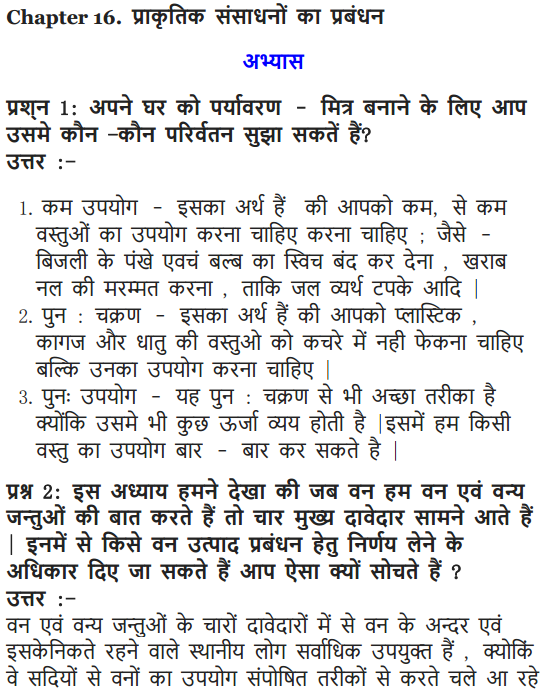
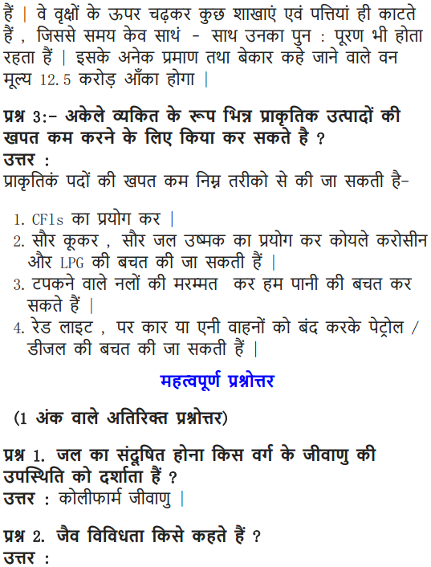
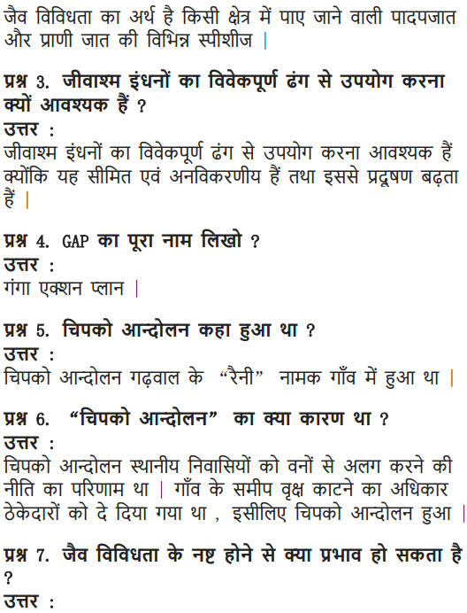
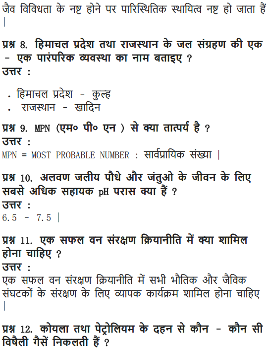
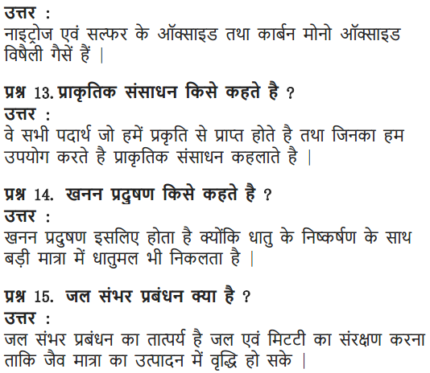

NCERT Solutions For Class 10 Science Chapter 16 Management Of Natural Resources: In this article, we will provide you all the necessary information regarding NCERT Solutions For Class 10 Science Chapter 16 Management Of Natural Resources. Along with the NCERT Solutions for the 16th chapter, we have also included management of natural resources class 10 important questions.
So with the help of this management of natural resources class 10 questions and answers you can easily score good marks in the subject science. Read on to find out everything about NCERT solutions for class 10 science chapter 16 to secure good marks in the subject Science.
NCERT Solutions for Class 10 Science Chapter 16 Management of Natural Resources
Before getting into the details of management of natural resources class 10 exercise solutions, let us have an overview of topics and sub topics under the management of natural resources class 10 notes:
- Sustainable Management Of Natural Resources
- Why Do We Need To Manage Our Resources?
- Forests And Wildlife
- Water For All
- Coal And Petroleum
- An Overview Of Natural Resource Management
Free download NCERT Solutions for Class 10 Science Chapter 16 Management Of Natural Resources PDF in Hindi Medium as well as in English Medium for CBSE, Uttarakhand, Bihar, MP Board, Gujarat Board, and UP Board students, who are using NCERT Books based on updated CBSE Syllabus for the session 2019-20.
- प्राकृतिक संसाधनों का प्रबंधन कक्षा 10 विज्ञान हिंदी में
- Class 10 Management of Natural Resources Important Questions
- Management of Natural Resources Class 10 Notes
- Management of Natural Resources NCERT Exemplar Solutions
- Class 10 Science Management of Natural Resources Mind Map
NCERT Solutions for Class 10 Science Chapter 16 Intext Questions
Page Number: 271
Question 1
What changes can you make in your habits to become more environment friendly ?
Answer:
(i) Segregate waste into recyclable and non-recyclable parts.
(ii) Switch off the lights, fans, television and other electrical appliances when not used.
(iii) Use energy efficient electrical appliances.
(iv) Walk for nearby shops instead of using vehicles.
(v) Reuse paper, plastic and glass bottles.
(vi) Reuse water from washing machines for cleaning purposes.
Question 2
What would be the advantages of exploiting resources with short term aims?
Answer:
The advantage of exploiting resources with short term aim would be self-centred satisfaction. They provide immediate advantages.
Question 3
How would these advantages differ from the advantages of using a long term perspective in managing our resources ?
Answer:
This way the resources can be used for the benefit of the present generation and also conserved for the benefit of generations to come. This ensures uniform distribution of resources among the people.
Question 4
Why do you think there should be equitable distribution of resources ? What forces would be working against an equitable distribution of our resources ?
Answer:
There should be equitable distribution of resources so that all, rich, powerful and poor people get benefit from the development of these resources. Rich, greedy and powerful people could work against an equitable distribution of our resources.
Page Number: 275
Question 1
Why should we conserve forest and wild life ?
Answer:
We should conserve forest and wildlife because of the following reasons.
- They help in maintaining the ecological balance at a place.
- They provide us with useful things like rubber, wood, dyes, gum, resin, oil, fibres, medicines, catachu, wax, honey, fruits, seeds, leaves of bidi etc.
- They purify the air, control flood and prevent soil erosion and maintain its fertility.
- Forests conserve biodiversity and hereditary resources. Ecological stability gets imbalanced due to damage in diversity.
Question 2
Suggest some approaches towards the conservation of forests.
Answer:
Some methods for forest conservation are as follow :
- Only except some trees, there should be ban on cutting of forest. Forests stop soil erosion.
- Forests should be saved from fires. Many forests get destroyed due to fires.
- Forests should be saved from pests and insects. Pesticides, insecticides should be sprayed in forests.
- Overgrazing should be prohibited.
- National rules and laws should be strictly enforced.
Page Number: 278
Question 1
Find out about the traditional systems of water harvesting management in your region.
Answer:
Many of us live in cities, where water is supplied by the municipal authorities. In the houses, systems of rainwater harvesting are installed which collect the water running off and channel it into a special pit created for the purpose. This helps to recharge ground water.
Efforts are being made to collect run off rain water in soak pits. This water enriches underground water and can cause rise in water table.
Run off water from roof tops can also be collected in trenches, specially made to enrich underground water table.
Question 2
Compare the above systems with the probable systems in hilly/mountainous areas or plains or plateau regions.
Answer:
Drinking water system in hilly areas :
- Kuhls were a traditional irrigation system in hilly areas such as Himachal Pradesh. In this system, the water flowing through falls, comes to villages located at lower regions through small human made drains.
- • In Meghalaya, the water is brought down to the lower areas of hills through bamboo drains.
Drinking water system in plains :
- Jhalaras were made in Rajasthan and Gujarat, essentially meant for community use and for religious rites.
- In some places bawaries etc. were made to supply water.
Drinking water system in plateau regions :
- Bandharas are check dams or diversion which were build across rivers. Such a traditional system was found in Maharashtra.
- In some regions, small pits were dug to collect water.
Question 3
Find out the source of water in your regions/locality. Is water from this source available to all people living in that area ?
Answer:
The main source of water in our region (Delhi) is river Yamuna, upper Ganga canal, Bhakra storage and ground water. Water after being treated is supplied to the residents through a system of water pipes.
The water is available to all the people living in the area.
(Note : Students should write about the locality (region around them.)
NCERT Solutions for Class 10 Science Chapter 16 Textbook Chapter End Questions
Question 1
What changes would you suggest in your home in order to be environment friendly?
Answer:
We would suggest following changes in our home to make it environment friendly.
- Separate wastes into recyclable and non-recyclable.
- Use electricity judiciously.
- Follow three R’s (Reduce, Recycle and Reuse).
- Eat as much as you require but do not waste food.
- Use water judiciously.
- Reuse newspapers and use less plastic.
- Have more windows in the house for natural light.
- T.V., fans, lights etc should be turned off while going outside the room. Less use of heaters. Try wearing sweaters instead.
- Public transport should be used instead of private vehicles.
Question 2
Can you suggest some changes in your school which would make it environment friendly ?
Answer:
Following changes can be made in schools to make it environment friendly.
- Plant enough trees in the school.
- Leaking taps should be repaired so that water is not wasted.
- Bring food in reusable boxes, not in plastic bags or in aluminium foil.
- Teachers can educate students about environmental conservation.
- There should be more windows in school for natural light.
Question 3
We saw in this chapter that thue are four main stakeholders when it comes to forests and wild life. Which among these should have the authority to decide the management of forest produce ? Why do you think so ?
Answer:
The people living in and around the forests and the forest department of The Government could be given the authority to manage the forests because the forest department of the Government has sufficient power and resources that can manage the forest resources well. The people living in and around forests know about the forest products and use them only according to their needs. In addition to this, they would not damage the forests and use forests sustainably.
Question 4
How can you as an individual contribute or make a difference to the management of (a) forests and wild life (b) water resources and (c) and petroleum ?
Answer:
(a) As an individual we can contribute the following to conserve forest and wildlife.
- Trees should not be cut. If trees needed to be cut, then new trees should be planted in their place.
- Trees should be saved from fire.
- Forest animals should be protected and their illegal hunting should be prohibited. Sustainable Management of Natural Resources
(b) As an individual we can contribute the following in the management of water resources.
- Tap should be closed when water is not in use while brushing, shaving, washing hands.
- Protect water sources from getting polluted.
- If there is any leak in water distribution system, then repair it or inform concerned agency.
(c) As an individual we can contribute the following in the management of coal and petroleum.
- Public transport should be used instead of private vehicle. It saves petrol.
- Do not use electricity in vain.
- Switch off the vehicle at the red light if you have to wait for too long.
- Wear extra sweater instead of using heaters.
- Use LPG or CNG.
Question 5
What can you as an individual do to reduce your consumption of the various natural resources ?
Answer:
We can do the following as an individual to reduce our consumption of the various natural resources.
- Follow the principle of three R’s i.e., Reduce, Recycle and Reuse.
- Plastic bags should be reused for the storage of food and small things.
- Food should be taken as per requirement.
- Reusable bottles should be used to store water everyday.
- The devices based on renewable sources of energy like solar cell, solar heater, etc. should be used.
Question 6
List five things you have done over the last one week to
(a) conserve our natural resources.
(b) increase the pressure on our natural resources.
Answer:
(a) To conserve our natural resources :
- Saved electricity by switching off the lights, fans, television and other electrical appliances when not needed.
- Used energy efficient electrical appliances. This is done by using compact fluorescent lamps (CFL) and fluorescent tube lights instead of traditional filament type electric bulbs.
- Used public transport for school instead of parent’s car.
- Took bath with less water than before and did not waste water.
- Took part in community awareness meetings regarding environmental conservation.
(b) To increase the pressure on natural resources :
- Used more paper than required for printing on my computer.
- Kept the fan on even when I was not in the room.
- Wasted food.
- Burnt crackers.
- Wasted petrol by unnecessarily starting the motorbike.
Question 7
On the basis of the issues raised in this chapter, what changes would you incorporate in your life-style in a move towards sustainable use of our resources ?
Answer:
We would bring following changes in our lifestyle so that sustainable use of our natural resources can be encouraged.
- We should limit our personal and collective needs beyond laws, rules and regulation so that the benefit of development can be made available to all and future generations.
- Close the tap when not in use.
- Turn off the lights, fans etc. in home, school or office when not in use.
- Make least use of polythene bags and these should not be thrown in garbage.
NCERT Solutions for Class 10 Science Chapter 16 Management of Natural Resources
Management of natural resources: Conservation and judicious use of natural resources. Forest and wildlife; Coal and Petroleum conservation. Examples of people’s participation for conservation of natural resources. Big dams: advantages and limitations; alternatives, if any. Water harvesting. Sustainability of natural resources.
| Board | CBSE |
| Textbook | NCERT |
| Class | Class 10 |
| Subject | Science |
| Chapter | Chapter 16 |
| Chapter Name | Management of Natural Resources |
| Number of Questions Solved | 16 |
| Category | NCERT Solutions |
Formulae Handbook for Class 10 Maths and Science
Question 1.
What changes can you make in your habits to become more environment-friendly?
Answer:
We should use the formula of three R’s in our home in order to be environment friendly.
- Reduce, i.e. to use less, and save the water and the electricity by stopping their wastage.
- Recycle, i.e. to segregate the waste so that materials which can be recycled should be dumped in a place for recycling.
- Reuse, i.e. to reuse certain materials like bottles Of jams and pickles for storing other kitchen items, etc.
Question 2.
What would be the advantages of exploiting resources with short-term aims?
Answer:
There would be no advantage of exploiting resources with short-term aims. Their exploitation may appear to be advantageous in the short-term but it is highly disadvantageous in the long- term. By doing so, we may be able to enjoy the comforts Of life but we would damage our environment gradually.
More Resources for CBSE Class 10
- NCERT Solutions
- NCERT Solutions for Class 10 Science
- NCERT Solutions for Class 10 Maths
- NCERT Solutions for Class 10 Social
- NCERT Solutions for Class 10 English
- NCERT Solutions for Class 10 Hindi
- NCERT Solutions for Class 10 Sanskrit
- NCERT Solutions for Class 10 Foundation of IT
- RD Sharma Class 10 Solutions
Question 3.
How would these advantages differ from the advantages of using a long-term perspective in managing our resources?
Answer:
The exploitation of natural resources with short-term aims are advantageous for present generation to meet their daily requirements whereas management of natural resources with long-term perspective are aimed to fulfill the needs of future generation and to maintain their sustainability.
Download NCERT Solutions for Class 10 Science Chapter 16 Management of Natural Resources PDF
Question 4.
Why do you think there should be equitable distribution of resources? What forces would be working against an equitable distribution of our resources?
Answer:
Everybody has equal rights over natural resources and also everybody should get the benefits from them. Therefore, equitable distribution of resources is essential to ensure that everybody gets their due benefit. But many forces go against the equitable distribution of natural resources. The geographical factors are the most important factors which do not allow equitable distribution of natural resources. Economy is another factor which prevents equitable distribution Of these resources.
Page 273
Question 1.
Why should we conserve forests and wildlife?
Answer:
We should conserve forests and wildlife for preserving our environment. They together maintain an ecological balance Of nature. We should conserve them for our economic and social growth and to meet our material aspirations.
Question 2.
Suggest some approaches towards the conservation of forests.
Answer:
The principles of three R’s should be followed to conserve the forests. In addition to this, all stakeholders should be made a part of any conservation programmes. Also, the interests of local forest dwellers should always be kept in mind while Organising a conservation programme.
Multiple Choice Questions (MCQs) [1 Mark each]
Question 1.
Manu and Dheer goes to same school, but their parents drop and pick them separately. After learning about natural resources and their management, they talked to their parents, who arrived on few decisions. What could be the best possible decisions among those given below.
(a) To walk the small distance to school
(b) Car pool
(c) Use common school bus at nearby stop
(d) All of the above
Answer:
(d) To save the resources like petrol and diesel used in cars, one can walk to their destination, if it is close, car pooling can be done by people sharing same locations, etc. These practice will save the natural resources and reduce environmental pollution.
Question 2.
The pH of water sample collected from a river . was found to be acidic in the range of 3.5 – 4.5. On the banks of the river were several factories that were discharging effluents into the river. The effluents of which one of the following factories is most likely to cause low pH of river water? [NCERT Exemplar]
(a) Soap and detergent factory
(b) Lead battery manufacturing factory
(c) Plastic cup manufacturing factory
(d) Alcohol distillery
Answer:
(b) Lead is a major constituent of lead-acid battery used extensively in car batteries. The discharge from lead battery manufacturing factory can lower the pH of river water by making it acidic.
Question 3.
Varun has read about some national movements associated with conserving environment and its resources. Chipko movement was one tree hugging movement in which the villagers compelled axemen to stop the cutting of trees by embracing and encircling trees. Help him in finding out the person who was not related with this movement?
(a) Rajendera Singh
(b) Gaura Devi
(c) Sunder Lai Bahuguna
(d) Chandi Prasad Bhatt
Answer:
(a) Rajendra Singh was not associated with the Chipko movement. Chipko movement was meant for protection of trees from excessive commercial exploitation and was instigated by Sunder Lai Bahuguna and Chandi Prasad Bhatt.
Question 4.
Due to several human activities, waterbodies are polluted resulting in decreased availability of usable water. Maya was testing the samples of polluted water in lab. The presence of which factor will confirm to her that the water sample is polluted.
Select the correct option.
(a) The presence of coliform bacteria
(b) High BOD
(c) Both (a) and (b)
(d) Either (a) or (b)
Answer:
(c) In polluted water sample, coliform bacteria are present. Biochemical Oxygen Demand is BOD. High BOD indicates that water is polluted.
Coliform bacteria occurs in waterbodies where human excreta and deadbodies are disposed off.
Question 5.
The construction of large dams has faced a lot of oppositions like the Sardar Sarovar Project on river Narmada lead to Narmada Bachao Andolan. Raj has to identify the correct problem that lead to such strong oppositions against construction of such dams.
Choose the correct option.
(a) Large areas of agricultural land and human habitation submerged
(b) Destruction of large ecosystem and loss of biological diversity
(c) Displacement of large number of local population without adequate rehabilitation
(d) All of the above
Answer:
(d) All the given statements are correct. Construction of large dams leads to disappearance of agricultural land, disposal of human habitation.
Thus, disturbing an ecosystem along with its diversity. People are displaced from their homes ” without any recommendation of living space and profession.
Question 6.
Ganga has been considered as a symbol of purity but is grossly polluted by waste dumped in it. Government has been making plans to revive this basin. Which steps should according to you be incorporated in the plan to prevent any further polluting of this river? Choose the correct option.
(a) Renovation of sewage pumps and treatment plants
(b) Extension of sewerage in unsewered areas to bring waste from those areas to treatment plants
(c) Installation of new treatment plants
(d) All of the above
Answer:
(d) All the strategies can be incorporated in the plan of action to make river Ganga pollution free.
Question 7.
Madhur was reading about rainwater harvesting and its benefits. He came to learn about different types of structures that are build in different states to conserve rainwater. Select the correct option which represent such structures.
(a) Bhundhis
(b) Khadins
(c) Both (a) and (b)
(d) Compost pit
Answer:
(c) Khadins and Bhundhis are the traditional rain harvesting systems used in Rajasthan and Madhya Pradesh, Uttar Pradesh, respectively.
Question 8.
A student reading an article on sustainable development came across some statements which confused him. Those statements are being given below.
Choose the incorrect statement from therm by selecting an option.
(a) Economic development is linked to environmental conservation
(b) Sustainable development encourages development for current generation and conservation of resources for future generations
(c) Sustainable development does not consider the view points of stakeholders
(d) Sustainable development is a long planned and persistent development
Answer:
(c) Statement (c) is incorrect because sustainable development do consider the interest of stakeholders, i.e. people with dependency on the natural resources and are affected by any project or its outcome directly or indirectly.
Question 9.
A programme called “silviculture” was started to replenish the forest resource, so as to meet the diverse needs of living beings. According to you, which statements from those given below will not be considered an advantage of this initiative.
(a) It maintains a perfect water cycle in nature
(b) It prevents soil erosion.
(c) It encourages plantation of multipurpose trees in open lands of urban area
(d) It produces a large quantity of raw materials for industry
Answer:
(c) Silviculture encourages plantation of multipurpose trees in open lands of urban area is not advantageous because they can be cut down when necessity for more land crops up is required.
Question 10.
Many international treaties and protocols have been developed and signed by different countries to reduce production of greenhouse gases and environment pollution. A treaty/protocol to reduce C02 emission was
(a) Montreal protocol (1987)
(b) Kyoto protocol (1997)
(c) Helesinki declaration (1989)
(d) None of the above
Answer:
(b) The Kyoto protocol was signed by various countries pledging to regulate the emissions of CO2. India signed this protocol in Aug. 2002 and has reduced its CO2 emission by 5.2% till now.
NCERT Solutions for Class 10 Science Chapter 16 Management of Natural Resources (Hindi Medium)





Class 10 Science Management of Natural Resources Mind Map
MANAGEMENT OF NATURAL RESOURCES
Natural resources are resources that exist without actions of humankind. They can be abiotic (such as air, water, land, mineral, ores, etc) or biotic (such as plants, animals, fossil fuels as they are obtained from decaying organic matter).
Natural resource management is an interdisciplinary field of study that considers the physical, biological, economic and social aspects of handling natural resources. It involves putting resources to their best use for human purposes in addition to preserving natural systems.
Why Do We Need To Manage Our Resources?
- All the things we use or consume such as food, clothes, books, toys, furniture, tools and vehicles are obtained from resources on this earth.
- A majority of natural resources is limited.
- Human population is increasing at a tremendous rate.
- Utilization of natural resources is increasing at an exponential rate.
- Need to conserve resources for future generations.
- Equal distribution of resources for equal benefit.
- Need to reduce the damage caused to the environment while these resources are either extracted or used.
Forests And Wild Life
Forests are ‘biodiversity hot spots’. Biodiversity hotspots are the regions with very high levels of species richness & high degree of endemism. It is very important to preserve biodiversity we have inherited as loss of diversity may lead to a loss of ecological stability.
Stakeholders
Stakeholders are:
- The people who live in or around forests are dependent on forest produce for various aspects of their life.
- The Forest Department of the Government which owns the land and controls the resources from forests.
- The industrialists who use various forests’ produce, but are not dependent on the forests in any one area.
- The wild life and nature enthusiasts who want to conserve nature in its pristine form.
When we consider the conservation of forests, we need to look at the stakeholders.
Let us look at an example for this:
The local people depend on forests for their firewood, timber, thatch, food, fruits, nuts, as well as medicine. In addition, their cattle also graze in forest areas or feed on other fodder which is collected from forests.
However, when vast tracts of forests have been converted to monocultures of pine, teak or eucalyptus for industrial use, a large amount of biodiversity in the area was destroyed. In addition, the varied needs of the local people (fodder, herbs, fruits & nuts for food) can no longer be met from such forests.
Hence, conserv ation of forests resources must be done at the broader level and should consider each and every group of stakeholder associated with forests resources.
In other words, while the environment is preserved, the benefits of the controlled exploitation should go to the local people, a process in which decentralised economic growth and ecological conservation go hand in hand.
Example of People’s Participation in the Management of Forests
Amrita Devi Bishnoi, in 1731 sacrificed her life along with 363 others for the protection of’khejri’ trees in Khejrali village near Jodhpur in Rajasthan.
The Chipko Andolan, result of a grass-root level effort to end the alienation of people from their forests. The movement was originated in a remote village called Reni in Garhwal during the early 1970s.
In 1972, the West Bengal Forest Department failed in reviving the degraded Sal forests in the southwestern districts of the state.
With the active and willing participation of the local community, the sal forests of Arabari underwent a remarkable recovery by 1983, a previously worthless forest w’as valued Rs 12.5 crores.
Pollution Of The Ganga
Ganga Action Plan, a multi-crore project came about in 1985 because the quality of the water in the Ganga was very poor. Several factors responsible for this poor condition of the river are:
- Hundred of towns & cities pour their garbage and excreta into it.
- Large amount of untreated sewage is dumped into the Ganges every day.
- In addition, human activities like bathing, washing of clothes & immersion of ashes or un-burnt corpses also lead to the huge amount of pollution in the river.
- Lastly, industries contribute chemical effluents to the Ganga’s pollution load which kills fish in large sections of the river.
Three R’s
Reduce: This means that you use less. For e.g. saving electricity by switching off unnecessary lights & fans, save water by repairing leaky taps etc.
Recycle: This means that you collect plastic, paper, glass & metal items & recycle these materials to make required things instead of synthesising or extracting fresh material. It requires proper segregation of wastes to prevent the dumping of recyclable materials along with other wastes.
Reuse: In this strategy, one simply use things again & again for e.g. plastic or glass bottles used for packaging of food can be used for storing things in the kitchen.
Coal And Petroleum
Coal and petroleum were formed from the degradation of bio-mass millions of years ago & hence they will be exhausted in the future no matter how carefully we use them i.e. they are exhaustible resources.
The management of these resources includes sustainable use of these resources, finding the alternative in forms of renewable energy such as solar energy, wind energy, geothermal energy etc, and increasing the efficiency of our machines or automobiles.
Water Conservation
Dams: Large dams can ensure the storage of adequate water for irrigation as well as for generating electricity.
Canal systems leading from these dams can transfer large amounts of water to greater distances. For e.g. Indira Gandhi Canal has brought greenery to considerable areas of Rajasthan.
However, constructions of large dams address three problems in particular:
- Social problems as they displace large no. of peasants & tribals without adequate compensation or rehabilitation.
- Economic problems, they invest huge amounts of public money without the generation of proportionate benefits.
- Environmental problems, they contribute enormously to deforestation & loss of biological diversity.
- Water Harvesting: Watershed management emphasises scientific soil and water conservation in order to increase the biomass production.
- Various organisations have been working on rejuvenating ancient systems of water harvesting as an alternative to the ‘mega-projects’ like dams.
- These communities have used hundreds of indigenous water saving methods such as dug small pits & lakes, put in place simple watershed systems, built small earthen dams, constructed dykes, sand & limestone reservoirs, and set up rooftop water-collecting units. This has recharged groundwater levels & even brought rivers back to life.
- Water harvesting is an age-old concept in India for e.g. khadins, tanks & nadis in Rajasthan, bandharas & tals in Maharashtra, bundhis in Madhya Pradesh & Uttar Pradesh, altars & pyncs in Bihar, kulhs in Himachal Pradesh, ponds in the Kandi belt of Jammu region, eris (tanks) in Tamil Nadu, surangams in Kerala, and kattas in Karnataka.
- Their main purpose of water harvesting is not to hold surface water but to recharge the ground water beneath. The advantages of storing ground water are:
- It does not evaporate, but spreads out to recharge wells & provides moisture for vegetation over a wide area.
- It does not provide breeding grounds for mosquitoes.
- Ground-water is also relatively protected from contamination by

Now that you are provided all the necessary information regarding the management of natural resources class 10 exercise solutions and we hope this detailed article on NCERT Solutions For Class 10 Science Chapter 16 Management Of Natural Resources is helpful. If you have any query regarding this article or NCERT Solutions For Class 10 Science Chapter 16 Management Of Natural Resources, drop your comments in the comment section below and we will get back to you as soon as possible.
NCERT Solutions for Class 10 Science All Chapters
- Chapter 1 Chemical Reactions and Equations
- Chapter 2 Acids, Bases and Salts
- Chapter 3 Metals and Non-metals
- Chapter 4 Carbon and Its Compounds
- Chapter 5 Periodic Classification of Elements
- Chapter 6 Life Processes
- Chapter 7 Control and Coordination
- Chapter 8 How do Organisms Reproduce?
- Chapter 9 Heredity and Evolution
- Chapter 10 Light Reflection and Refraction
- Chapter 11 Human Eye and Colourful World
- Chapter 12 Electricity
- Chapter 13 Magnetic Effects of Electric Current
- Chapter 14 Sources of Energy
- Chapter 15 Our Environment
- Chapter 16 Management of Natural Resources